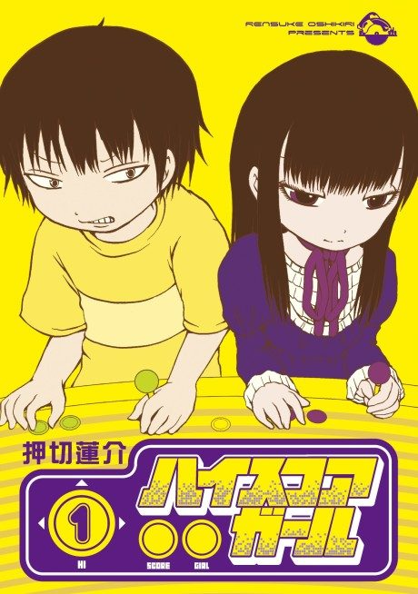

Anime
Anime
Manga2018 · Comedy, Drama, Romance
Hi Score Girl
ハイスコアガール
AniList7.5
Animeter—
2 seasons21 ep
MangaUnclear
2 seasons, 21 episodes
In airing order. Episode numbers on this site count straight through every season, so season 2 starts at episode 13.
1
2018 · TV
Hi Score Girl
Episodes1–1212 ep
2
2019 · TV
Hi Score Girl II
Episodes13–219 ep
Films, OVAs and specials
Not counted in the episode numbers above.
·
2019 · OVA
Hi Score Girl: Extra Stage
Sources: AniList